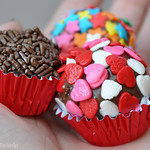
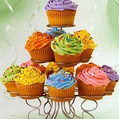

Bolos & Cupcakes!
Bolo de Aniversário
 Uma das principai atrações em uma festa de aniversário, não é nem o próprio aniversariante, mas o Bolo de Aniversário. Principalmente quando o bolo é bem trabalhado e feito com amor e mãos habilidosas. Além da aparência deslumbrabte, um sabor e uma textura que faz todos desejarem mais um pedaço.
Uma das principai atrações em uma festa de aniversário, não é nem o próprio aniversariante, mas o Bolo de Aniversário. Principalmente quando o bolo é bem trabalhado e feito com amor e mãos habilidosas. Além da aparência deslumbrabte, um sabor e uma textura que faz todos desejarem mais um pedaço.
Brigadeiros
Os brigadeiros e os beijinhos, são atrações que chamam a atenção de todos em uma festa de aniversário, tanto crianças como adultos são fascinados por doces, mas quando se trata de um brigadeirão...hummmmm
Veja os melhores Brigadeiros no Guia Pinterest para brigadeiros.
Os Cupcakes
Os nossos cupcakes tem chamado a atenção de muitas pessoas. Pois, além do sabor suave e sedutor, tem os diversos sabores feitos sob medida para cada cliente
Veja no Instagram meus trabalhos.